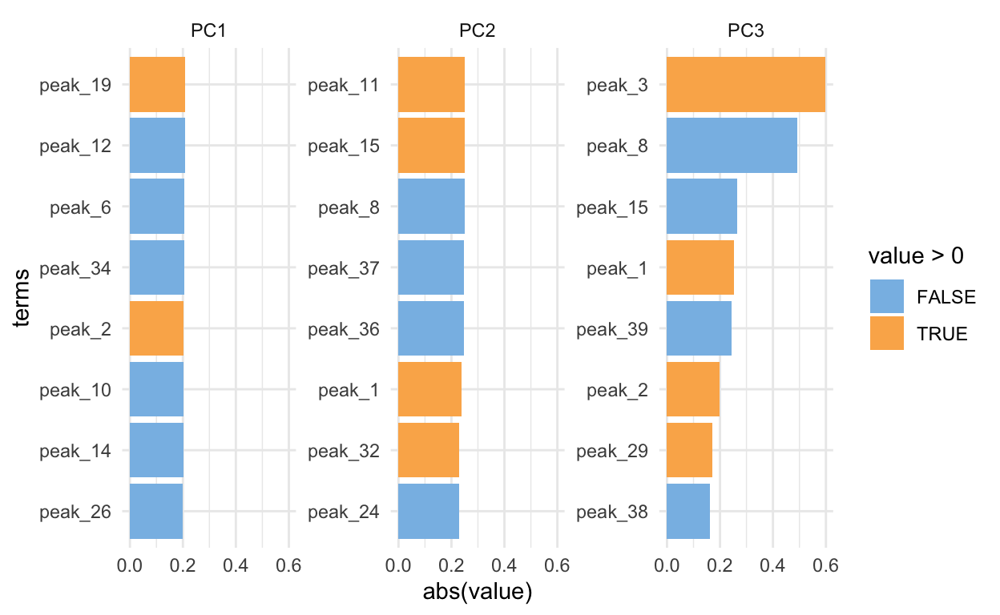

Data visualization for volatiles in different durian varieties
Durian is a tropical fruit that is either much loved or much hated in Singapore. There are different varieties of durians, and the top durians such as Mao Shan Wang can command prices of around $20-30 per kg. The price depends on the supply, the quality, and of course the demand.
Teh et al. (2017) mentioned that the durian aroma comes mainly from the sulfur compounds, which gives it the characteristic pungent smell; as well as esters, which contributes to the fruity character.
The data below is from the work done by Chin et al. (2007). A total of 39 volatiles were identified in three varieties of durian: D2, D24 and D101. In the paper, PCA was carried out to distinguish between the three varieties.
The file was saved on my working directory and I imported it into R
durian <- read_csv("Durian.csv") %>%
clean_names()
d101 <- durian %>%
select(-peak_no, -odor_description, - category) %>%
pivot_longer(cols = starts_with("d"),
names_to = "variety",
values_to = "concentration") %>%
filter(variety == "d101") %>%
top_n(10, concentration) %>%
ggplot(aes(fct_reorder(compound, concentration), concentration)) +
geom_col(fill = "goldenrod") +
labs(x = NULL,
title = "D101",
x = "Relative Concentration (ug/g)",
caption = "Chin et al, 2007") +
coord_flip() +
theme_classic() +
theme(title = element_text(face = "bold", size = 16),
axis.text = element_text(size = 14))
d2 <- durian %>%
select(-peak_no, -odor_description, - category) %>%
pivot_longer(cols = starts_with("d"),
names_to = "variety",
values_to = "concentration") %>%
filter(variety == "d2") %>%
top_n(10, concentration) %>%
ggplot(aes(fct_reorder(compound, concentration), concentration)) +
geom_col(fill = "forestgreen") +
labs(x = NULL,
title = "D2",
x = "Relative Concentration (ug/g)",
caption = "Chin et al, 2007") +
coord_flip() +
theme_classic() +
theme(title = element_text(face = "bold", size = 16),
axis.text = element_text(size = 14))
d24 <- durian %>%
select(-peak_no, -odor_description, - category) %>%
pivot_longer(cols = starts_with("d"),
names_to = "variety",
values_to = "concentration") %>%
filter(variety == "d24") %>%
top_n(10, concentration) %>%
ggplot(aes(fct_reorder(compound, concentration), concentration)) +
geom_col(fill = "darkorange2") +
labs(x = NULL,
title = "D24",
x = "Relative Concentration (ug/g)",
caption = "Chin et al, 2007") +
coord_flip() +
theme_classic() +
theme(title = element_text(face = "bold", size = 16),
axis.text = element_text(size = 14))
gridExtra::grid.arrange(d101, d2, d24, ncol = 3,
top = "Comparison of top volatiles found in different durian varieties")
durian %>%
select(-peak_no, -odor_description) %>%
pivot_longer(cols = starts_with("d"),
names_to = "variety",
values_to = "concentration") %>%
group_by(category, variety) %>%
summarize(sum_conc = sum(concentration)) %>%
arrange(desc(sum_conc))
# A tibble: 9 x 3
# Groups: category [3]
category variety sum_conc
<chr> <chr> <dbl>
1 Ester d2 54.7
2 Ester d101 54.6
3 Sulfur-compounds d24 47.4
4 Sulfur-compounds d2 46.5
5 Sulfur-compounds d101 36.5
6 Ester d24 30.5
7 Alcohol d2 1.09
8 Alcohol d101 0.72
9 Alcohol d24 0.56From the plot above, half of the top ten volatile compounds in D24 were sulfur-containing compounds, and the most abundant volatile was diethyl disulfide (18.76 ug/g). The odor description for diethyl disulfide is “Sulfury, roasty, cabbage-like odor”.
For D101, the top two most abundant volatile compounds were esters: ethyl 2-methylbutanoate (21.89 ug/g) (poweful green, fruity, apple-like odor) and propyl 2-methylbutanoate (12.67 ug/g), followed by sulfur compounds diethyl disulfide (12.42ug/g) and diethyl trisulfide (5.97ug/g).
For D2, ethyl 2-methylbutanoate (29.68 ug/g) was relatively higher than in D101.
If we look at the total concentration of esters and sulfur compounds, D24 has the highest concentration of sulfur compounds (in line with the plot above). Comparing D2 and D101, the concentration of esters is about the same, but D2 has higher concentration of sulfur-containing compounds than D101. According to Takeoka et al. (1995), branched chain esters have lower odor thresholds than their straight chain counterparts. It appeared that D101, with slightly lower concentration of sulfur-compounds, would be perceived as more fruity. However, the authors found that D2 was perceived to have a stronger sweet and fruity odor; and that D101 was perceived to have a well-balanced aroma. I’m not quite sure why, I guess I would need to taste in person to find out!
I attempted to do PCA with the data provided, but it was a bit silly as n = 3, as I did not have the raw data with me. In addition, the assumptions for KMO and Bartlett’s tests were not met.
Due to the very small number of observations, I ran into this error: Error in comps[, 1:object$num_comp, drop = FALSE] : subscript out of bounds
After specifying that num_comp = 3, I did not receive this error message again.
The script below shows my attempt to reproduce the PCA variable loadings plot. I managed to get the same plot as the authors, so probably if I have raw data with me, that would be great. Note that I did not show the scree plot, eigenvalues and variance explained plot, as n=3 is really very small and PCA should not even be conducted. Nevertheless, it was an exercise in attempting to understand the conclusions drawn by the authors.
# PACKAGES ####
library(pacman)
p_load(tidyverse, janitor, skimr, psych, tidymodels, learntidymodels)
# IMPORT ####
durian <- read_csv("Durian.csv") %>%
clean_names() %>%
mutate(peak_no_2 = paste( "peak", peak_no, sep = "_")) %>%
select(-peak_no) %>%
rename(peak_no = peak_no_2) %>%
select(peak_no, everything())
glimpse(durian)
Rows: 39
Columns: 7
$ peak_no <chr> "peak_3", "peak_4", "peak_7", "peak_8", "p…
$ compound <chr> "Ethyl acetate", "Methyl propanoate", "Eth…
$ category <chr> "Ester", "Ester", "Ester", "Ester", "Ester…
$ d101 <dbl> 0.28, 0.97, 3.11, 0.46, 0.19, 0.30, 4.07, …
$ d2 <dbl> 0.61, 0.88, 1.85, 0.51, 0.09, 0.45, 2.33, …
$ d24 <dbl> 0.93, 0.71, 2.53, 0.52, 0.56, 0.00, 2.29, …
$ odor_description <chr> "Pleasant, ethereal, fruity, brandy-like o…# so that can pivot longer later
# durian$d101 <- as.character(durian$d101)
# durian$d2 <- as.character(durian$d2)
durian$d24 <- as.numeric(durian$d24)
# TRANSFORM #####
durian_reshape <- durian %>%
# remove unnecessary columns
select(-category, -odor_description, -compound) %>%
# pivot longer for variety
pivot_longer(cols = starts_with("d"),
names_to = "variety",
values_to = "concentration") %>%
pivot_wider(names_from = peak_no,
values_from = concentration) %>%
clean_names() %>%
# pivot wider for compound names as (X)/Features
dplyr::group_by(variety) %>%
dplyr::summarize_all(sum, na.rm = T)
glimpse(durian_reshape) # 40 variables: 1Y and 39 X
Rows: 3
Columns: 40
$ variety <chr> "d101", "d2", "d24"
$ peak_3 <dbl> 0.28, 0.61, 0.93
$ peak_4 <dbl> 0.97, 0.88, 0.71
$ peak_7 <dbl> 3.11, 1.85, 2.53
$ peak_8 <dbl> 0.46, 0.51, 0.52
$ peak_9 <dbl> 0.19, 0.09, 0.56
$ peak_10 <dbl> 0.30, 0.45, 0.00
$ peak_11 <dbl> 4.07, 2.33, 2.29
$ peak_12 <dbl> 0.85, 2.22, 0.04
$ peak_13 <dbl> 4.63, 1.74, 3.81
$ peak_14 <dbl> 21.89, 29.68, 4.97
$ peak_15 <dbl> 0.32, 0.22, 0.22
$ peak_17 <dbl> 0.95, 0.63, 0.95
$ peak_18 <dbl> 12.67, 4.77, 11.30
$ peak_19 <dbl> 0.19, 0.00, 0.38
$ peak_20 <dbl> 0.00, 0.14, 0.00
$ peak_22 <dbl> 0.32, 1.70, 0.00
$ peak_23 <dbl> 0.73, 0.00, 0.60
$ peak_26 <dbl> 1.17, 5.52, 0.00
$ peak_28 <dbl> 0.58, 0.45, 0.31
$ peak_29 <dbl> 0.15, 0.25, 0.15
$ peak_32 <dbl> 0.22, 0.10, 0.00
$ peak_33 <dbl> 0.55, 0.55, 0.26
$ peak_6 <dbl> 0.72, 1.09, 0.56
$ peak_1 <dbl> 5.48, 4.26, 3.55
$ peak_2 <dbl> 5.00, 2.72, 5.77
$ peak_5 <dbl> 0.27, 0.00, 0.13
$ peak_16 <dbl> 0.34, 0.00, 0.31
$ peak_21 <dbl> 0.09, 0.06, 0.32
$ peak_24 <dbl> 12.42, 15.85, 18.76
$ peak_25 <dbl> 0.00, 0.00, 0.33
$ peak_27 <dbl> 3.63, 3.35, 9.04
$ peak_30 <dbl> 0.66, 0.14, 0.66
$ peak_31 <dbl> 0.20, 0.11, 1.03
$ peak_34 <dbl> 5.97, 14.68, 2.52
$ peak_35 <dbl> 0.86, 1.73, 0.68
$ peak_36 <dbl> 0.47, 1.46, 1.74
$ peak_37 <dbl> 0.59, 1.47, 1.71
$ peak_38 <dbl> 0.12, 0.16, 0.11
$ peak_39 <dbl> 0.42, 0.49, 0.71durian_reshape$variety <- factor(durian_reshape$variety)
# EDA
skim(durian_reshape)
| Name | durian_reshape |
| Number of rows | 3 |
| Number of columns | 40 |
| _______________________ | |
| Column type frequency: | |
| factor | 1 |
| numeric | 39 |
| ________________________ | |
| Group variables | None |
Variable type: factor
| skim_variable | n_missing | complete_rate | ordered | n_unique | top_counts |
|---|---|---|---|---|---|
| variety | 0 | 1 | FALSE | 3 | d10: 1, d2: 1, d24: 1 |
Variable type: numeric
| skim_variable | n_missing | complete_rate | mean | sd | p0 | p25 | p50 | p75 | p100 | hist |
|---|---|---|---|---|---|---|---|---|---|---|
| peak_3 | 0 | 1 | 0.61 | 0.33 | 0.28 | 0.44 | 0.61 | 0.77 | 0.93 | ▇▁▇▁▇ |
| peak_4 | 0 | 1 | 0.85 | 0.13 | 0.71 | 0.79 | 0.88 | 0.92 | 0.97 | ▇▁▁▇▇ |
| peak_7 | 0 | 1 | 2.50 | 0.63 | 1.85 | 2.19 | 2.53 | 2.82 | 3.11 | ▇▁▇▁▇ |
| peak_8 | 0 | 1 | 0.50 | 0.03 | 0.46 | 0.48 | 0.51 | 0.52 | 0.52 | ▃▁▁▁▇ |
| peak_9 | 0 | 1 | 0.28 | 0.25 | 0.09 | 0.14 | 0.19 | 0.38 | 0.56 | ▇▇▁▁▇ |
| peak_10 | 0 | 1 | 0.25 | 0.23 | 0.00 | 0.15 | 0.30 | 0.38 | 0.45 | ▇▁▁▇▇ |
| peak_11 | 0 | 1 | 2.90 | 1.02 | 2.29 | 2.31 | 2.33 | 3.20 | 4.07 | ▇▁▁▁▃ |
| peak_12 | 0 | 1 | 1.04 | 1.10 | 0.04 | 0.44 | 0.85 | 1.54 | 2.22 | ▇▇▁▁▇ |
| peak_13 | 0 | 1 | 3.39 | 1.49 | 1.74 | 2.78 | 3.81 | 4.22 | 4.63 | ▇▁▁▇▇ |
| peak_14 | 0 | 1 | 18.85 | 12.63 | 4.97 | 13.43 | 21.89 | 25.78 | 29.68 | ▇▁▁▇▇ |
| peak_15 | 0 | 1 | 0.25 | 0.06 | 0.22 | 0.22 | 0.22 | 0.27 | 0.32 | ▇▁▁▁▃ |
| peak_17 | 0 | 1 | 0.84 | 0.18 | 0.63 | 0.79 | 0.95 | 0.95 | 0.95 | ▃▁▁▁▇ |
| peak_18 | 0 | 1 | 9.58 | 4.22 | 4.77 | 8.04 | 11.30 | 11.98 | 12.67 | ▃▁▁▁▇ |
| peak_19 | 0 | 1 | 0.19 | 0.19 | 0.00 | 0.10 | 0.19 | 0.29 | 0.38 | ▇▁▇▁▇ |
| peak_20 | 0 | 1 | 0.05 | 0.08 | 0.00 | 0.00 | 0.00 | 0.07 | 0.14 | ▇▁▁▁▃ |
| peak_22 | 0 | 1 | 0.67 | 0.90 | 0.00 | 0.16 | 0.32 | 1.01 | 1.70 | ▇▁▁▁▃ |
| peak_23 | 0 | 1 | 0.44 | 0.39 | 0.00 | 0.30 | 0.60 | 0.66 | 0.73 | ▃▁▁▁▇ |
| peak_26 | 0 | 1 | 2.23 | 2.91 | 0.00 | 0.58 | 1.17 | 3.34 | 5.52 | ▇▇▁▁▇ |
| peak_28 | 0 | 1 | 0.45 | 0.14 | 0.31 | 0.38 | 0.45 | 0.52 | 0.58 | ▇▁▇▁▇ |
| peak_29 | 0 | 1 | 0.18 | 0.06 | 0.15 | 0.15 | 0.15 | 0.20 | 0.25 | ▇▁▁▁▃ |
| peak_32 | 0 | 1 | 0.11 | 0.11 | 0.00 | 0.05 | 0.10 | 0.16 | 0.22 | ▇▁▇▁▇ |
| peak_33 | 0 | 1 | 0.45 | 0.17 | 0.26 | 0.41 | 0.55 | 0.55 | 0.55 | ▃▁▁▁▇ |
| peak_6 | 0 | 1 | 0.79 | 0.27 | 0.56 | 0.64 | 0.72 | 0.90 | 1.09 | ▇▇▁▁▇ |
| peak_1 | 0 | 1 | 4.43 | 0.98 | 3.55 | 3.90 | 4.26 | 4.87 | 5.48 | ▇▇▁▁▇ |
| peak_2 | 0 | 1 | 4.50 | 1.59 | 2.72 | 3.86 | 5.00 | 5.38 | 5.77 | ▇▁▁▇▇ |
| peak_5 | 0 | 1 | 0.13 | 0.14 | 0.00 | 0.06 | 0.13 | 0.20 | 0.27 | ▇▁▇▁▇ |
| peak_16 | 0 | 1 | 0.22 | 0.19 | 0.00 | 0.16 | 0.31 | 0.32 | 0.34 | ▃▁▁▁▇ |
| peak_21 | 0 | 1 | 0.16 | 0.14 | 0.06 | 0.07 | 0.09 | 0.21 | 0.32 | ▇▁▁▁▃ |
| peak_24 | 0 | 1 | 15.68 | 3.17 | 12.42 | 14.13 | 15.85 | 17.30 | 18.76 | ▇▁▇▁▇ |
| peak_25 | 0 | 1 | 0.11 | 0.19 | 0.00 | 0.00 | 0.00 | 0.16 | 0.33 | ▇▁▁▁▃ |
| peak_27 | 0 | 1 | 5.34 | 3.21 | 3.35 | 3.49 | 3.63 | 6.33 | 9.04 | ▇▁▁▁▃ |
| peak_30 | 0 | 1 | 0.49 | 0.30 | 0.14 | 0.40 | 0.66 | 0.66 | 0.66 | ▃▁▁▁▇ |
| peak_31 | 0 | 1 | 0.45 | 0.51 | 0.11 | 0.16 | 0.20 | 0.62 | 1.03 | ▇▁▁▁▃ |
| peak_34 | 0 | 1 | 7.72 | 6.27 | 2.52 | 4.24 | 5.97 | 10.32 | 14.68 | ▇▇▁▁▇ |
| peak_35 | 0 | 1 | 1.09 | 0.56 | 0.68 | 0.77 | 0.86 | 1.29 | 1.73 | ▇▁▁▁▃ |
| peak_36 | 0 | 1 | 1.22 | 0.67 | 0.47 | 0.96 | 1.46 | 1.60 | 1.74 | ▇▁▁▇▇ |
| peak_37 | 0 | 1 | 1.26 | 0.59 | 0.59 | 1.03 | 1.47 | 1.59 | 1.71 | ▇▁▁▇▇ |
| peak_38 | 0 | 1 | 0.13 | 0.03 | 0.11 | 0.11 | 0.12 | 0.14 | 0.16 | ▇▁▁▁▃ |
| peak_39 | 0 | 1 | 0.54 | 0.15 | 0.42 | 0.45 | 0.49 | 0.60 | 0.71 | ▇▇▁▁▇ |
# no missing values
# should do auto-scale and means centering later
# Check assumptions for EDA
durian_no_y <- durian_reshape %>%
dplyr::select(-variety)
# KMO test
durian_no_y %>%
cor() %>%
KMO() # overall MSA = 0.5
Error in solve.default(r) :
system is computationally singular: reciprocal condition number = 2.35978e-20Kaiser-Meyer-Olkin factor adequacy
Call: KMO(r = .)
Overall MSA = 0.5
MSA for each item =
peak_3 peak_4 peak_7 peak_8 peak_9 peak_10 peak_11 peak_12
0.5 0.5 0.5 0.5 0.5 0.5 0.5 0.5
peak_13 peak_14 peak_15 peak_17 peak_18 peak_19 peak_20 peak_22
0.5 0.5 0.5 0.5 0.5 0.5 0.5 0.5
peak_23 peak_26 peak_28 peak_29 peak_32 peak_33 peak_6 peak_1
0.5 0.5 0.5 0.5 0.5 0.5 0.5 0.5
peak_2 peak_5 peak_16 peak_21 peak_24 peak_25 peak_27 peak_30
0.5 0.5 0.5 0.5 0.5 0.5 0.5 0.5
peak_31 peak_34 peak_35 peak_36 peak_37 peak_38 peak_39
0.5 0.5 0.5 0.5 0.5 0.5 0.5 # Bartlett
durian_no_y %>%
cor() %>%
cortest.bartlett(., n = 3) # p = 1, by right not suitable for PCA
$chisq
[1] -Inf
$p.value
[1] 1
$df
[1] 741# 3 observations - not really ok for PCA
# PCA ####
glimpse(durian_reshape)
Rows: 3
Columns: 40
$ variety <fct> d101, d2, d24
$ peak_3 <dbl> 0.28, 0.61, 0.93
$ peak_4 <dbl> 0.97, 0.88, 0.71
$ peak_7 <dbl> 3.11, 1.85, 2.53
$ peak_8 <dbl> 0.46, 0.51, 0.52
$ peak_9 <dbl> 0.19, 0.09, 0.56
$ peak_10 <dbl> 0.30, 0.45, 0.00
$ peak_11 <dbl> 4.07, 2.33, 2.29
$ peak_12 <dbl> 0.85, 2.22, 0.04
$ peak_13 <dbl> 4.63, 1.74, 3.81
$ peak_14 <dbl> 21.89, 29.68, 4.97
$ peak_15 <dbl> 0.32, 0.22, 0.22
$ peak_17 <dbl> 0.95, 0.63, 0.95
$ peak_18 <dbl> 12.67, 4.77, 11.30
$ peak_19 <dbl> 0.19, 0.00, 0.38
$ peak_20 <dbl> 0.00, 0.14, 0.00
$ peak_22 <dbl> 0.32, 1.70, 0.00
$ peak_23 <dbl> 0.73, 0.00, 0.60
$ peak_26 <dbl> 1.17, 5.52, 0.00
$ peak_28 <dbl> 0.58, 0.45, 0.31
$ peak_29 <dbl> 0.15, 0.25, 0.15
$ peak_32 <dbl> 0.22, 0.10, 0.00
$ peak_33 <dbl> 0.55, 0.55, 0.26
$ peak_6 <dbl> 0.72, 1.09, 0.56
$ peak_1 <dbl> 5.48, 4.26, 3.55
$ peak_2 <dbl> 5.00, 2.72, 5.77
$ peak_5 <dbl> 0.27, 0.00, 0.13
$ peak_16 <dbl> 0.34, 0.00, 0.31
$ peak_21 <dbl> 0.09, 0.06, 0.32
$ peak_24 <dbl> 12.42, 15.85, 18.76
$ peak_25 <dbl> 0.00, 0.00, 0.33
$ peak_27 <dbl> 3.63, 3.35, 9.04
$ peak_30 <dbl> 0.66, 0.14, 0.66
$ peak_31 <dbl> 0.20, 0.11, 1.03
$ peak_34 <dbl> 5.97, 14.68, 2.52
$ peak_35 <dbl> 0.86, 1.73, 0.68
$ peak_36 <dbl> 0.47, 1.46, 1.74
$ peak_37 <dbl> 0.59, 1.47, 1.71
$ peak_38 <dbl> 0.12, 0.16, 0.11
$ peak_39 <dbl> 0.42, 0.49, 0.71# recipe
durian_recipe <- recipe(~ ., data = durian_reshape) %>%
update_role(variety, new_role = "id") %>%
# step_naomit(all_predictors()) %>%
step_normalize(all_predictors()) %>%
step_pca(all_predictors(), id = "pca", num_comp = 3)
# need to specify num_comp = 3 if not will have error
# Error in comps[, 1:object$num_comp, drop = FALSE] :
# subscript out of bounds
# prep: estimate the required parameters from a training set
# that can be later applied to other data sets
# returns an updated recipe with its estimates
durian_prep <- prep(durian_recipe)
tidy_pca_loadings <- durian_prep %>%
tidy(id = "pca")
# bake
durian_bake <- bake(durian_prep, durian_reshape)
# plot loadings for top 8
loadings_top_8 <- tidy_pca_loadings %>%
group_by(component) %>%
top_n(8, abs(value)) %>%
ungroup() %>%
mutate(terms = tidytext::reorder_within(terms, abs(value), component)) %>%
ggplot(aes(abs(value), terms, fill = value>0)) +
geom_col() +
facet_wrap(~component, scales = "free_y") +
tidytext::scale_y_reordered() +
ggthemes::scale_fill_few() +
theme_minimal()
juice(durian_prep) %>%
ggplot(aes(PC1, PC2, label = variety)) +
geom_point(aes(col = variety), show.legend = F) +
geom_text() +
labs(x = "PC1",
y = "PC2") +
theme_classic()
# loadings only
# define arrow style
arrow_style <- arrow(angle = 30,
length = unit(0.02, "inches"),
type = "closed")
# get pca loadings into wider format
pca_loadings_wider <- tidy_pca_loadings%>%
pivot_wider(names_from = component, id_cols = terms)
pca_loadings_only <- pca_loadings_wider %>%
ggplot(aes(x = PC1, y = PC2)) +
geom_segment(aes(xend = PC1, yend = PC2),
x = 0,
y = 0,
arrow = arrow_style) +
ggrepel::geom_text_repel(aes(x = PC1, y = PC2, label = terms),
hjust = 0,
vjust = 1,
size = 4,
color = "deepskyblue4") +
labs(title = "Loadings on PCs 1 and 2 for normalized data") +
theme_classic()
# check raw data
# PC 1
pc1_raw <- durian %>%
filter(peak_no %in% c("peak_19",
"peak_12",
"peak_6",
"peak_34",
"peak_2",
"peak_10",
"peak_14",
"peak_26"))
# PC 2
pc2_raw <- durian %>%
filter(peak_no %in% c("peak_11",
"peak_15",
"peak_8",
"peak_37",
"peak_36",
"peak_1",
"peak_32",
"peak_24"))
pc1_raw %>% arrange(peak_no)
# A tibble: 8 x 7
peak_no compound category d101 d2 d24 odor_description
<chr> <chr> <chr> <dbl> <dbl> <dbl> <chr>
1 peak_10 Methyl but… Ester 0.3 0.45 0 Apple-like odor
2 peak_12 Ethyl buta… Ester 0.85 2.22 0.04 Fruity odor with pi…
3 peak_14 Ethyl 2-me… Ester 21.9 29.7 4.97 Powerful green, fru…
4 peak_19 Propyl 3-m… Ester 0.19 0 0.38 Fruity odor
5 peak_2 Propanethi… Sulfur-c… 5 2.72 5.77 Cabbage, sweet onio…
6 peak_26 Ethyl hexa… Ester 1.17 5.52 0 Powerful fruity odo…
7 peak_34 Diethyl tr… Sulfur-c… 5.97 14.7 2.52 Sweet alliaceous od…
8 peak_6 Ethanol Alcohol 0.72 1.09 0.56 <NA> pc2_raw %>% arrange(peak_no)
# A tibble: 8 x 7
peak_no compound category d101 d2 d24 odor_description
<chr> <chr> <chr> <dbl> <dbl> <dbl> <chr>
1 peak_1 Ethanethiol Sulfur-c… 5.48 4.26 3.55 Onion, rubber odor
2 peak_11 Methyl 2-but… Ester 4.07 2.33 2.29 Sweet fruity, app…
3 peak_15 Ethyl 3-meth… Ester 0.32 0.22 0.22 Fruity odor remin…
4 peak_24 Diethyl disu… Sulfur-c… 12.4 15.8 18.8 Sulfury, roasty, …
5 peak_32 Methyl octan… Ester 0.22 0.1 0 Powerful winey, f…
6 peak_36 3,5-dimethyl… Sulfur-c… 0.47 1.46 1.74 Sulfury, heavy, c…
7 peak_37 3,5-dimethyl… Sulfur-c… 0.59 1.47 1.71 Sulfury, onion od…
8 peak_8 Ethyl 2-meth… Ester 0.46 0.51 0.52 Fruity aromatic o…pca_loadings_only
loadings_top_8

I feel that data visualization is a very important data exploratory tool to better understand your data. After data visualization, PCA can be performed to further explore your data and uncover latent structures. Together with the insights from earlier visualizations, the findings of PCA could be better interpreted.
The number of observations should not be so small until it is a bit meaningless to carry out PCA. This, was due to me carrying out analysis on aggregated data. I would need to remember to carry out more replicates if I am doing this experiment in the lab.
What I like about the paper was that there was proper documentation on how extraction efficiency was optimised through sample size, vial size, the use of salting out, as well as equilibration time. The use of salting out is rather controversial as salt alters the equilibrium space between SPME fiber coatings and headspace. The results with and without addition of salt should always be compared to understand the effect of salt addition.
In addition, internal standard was used as a semi-quantitative analysis for relative concentration of volatile compounds. This would be better than just comparing percentage area of compounds because it gives the concentration in “absolute” value. However, it is still a semi-quantitative method as the IS cannot correct for differences in ionization during analysis, but it is better than nothing.
Flavor analysis is not straightforward as numbers used to describe concentration do not indicate odor threshold and intensity perceived. They also do not descripe the type of odor. I wonder if text analysis could be applied to odor descriptions in flavor analysis? Odor threshold is further influenced by chemical structure, and extraction efficiency is also affected by sample matrix and volatility of compound when SPME is used as extraction. SPME offers a snapshot of flavor of food, but it would be more robust to compare against other extraction techniques as well. The ideal extraction method should not introduce artefacts (high temperature extraction, use of solvents etc), and requires high-end techniques. Alas, not every lab is that well-equipped. However, we should always make sure that our data is “clean,” so that our insights are factually correct and not contaminated by errors in extraction. The most advanced data analytics cannot correct for erroneous data, and any further analysis on such data carries no meaning.